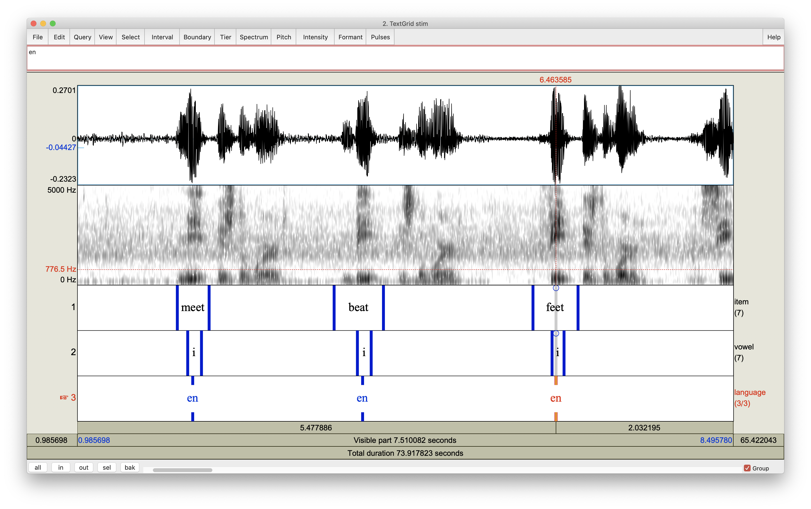

Programming assignment 3
Topics: Github, Rmarkdown, RStudio projects, Praat
Overview
In this programming assignment you will continue developing techniques for getting data from Praat. This time you will learn a new method of segmenting sound files. Specifically, you will work with vowel data and do the following: make recordings, segment them, and calculate vowel formant metrics similar to those you have read about in class. Next, you will analyze and plot the data in R. You will write a reproducible report using Quato Markdown that will be hosted on github.
Assigned: Week 9 (3/25)
Due: Monday, 4/1 before 10pm
Instructions
Create an RStudio project
- Create a new RStudio project on your desktop called
pa_3 - Create a subdirectory inside
pa_3calledscripts - Create a subdirectory inside
pa_3calleddata - Create a subdirectory inside
pa_3calledstim - Create a
README.qmdfile in the root directory
Praat
- Record a new sound object named
stim. While recording, repeat the following items inside the carrier sentence you see below:- English (“x” is the word”, ex: ‘meet’ is the word):1
- /i/: “meet”, “beat”, “feet”, “seat”, “heat”, “fleet”
- /ɑ/: “moss”, “bot”, “fought”, “sought”, “caught”, “brought”
- /u/: “moot”, “boot”, “food”, “soothe”, “cooed”, “dude”
- Spanish (“x” es la palabra, ex: ‘mis’ es la palabra):
- /i/: “mis”, “bis”, “pis”, “cito”, “fito”, “quito”
- /a/: “mas”, “vas”, “pasa”, “sala”, “fama”, “cama”
- /u/: “musa”, “bulto”, “puso”, “supo”, “fumo”, “cura”
- English (“x” is the word”, ex: ‘meet’ is the word):1
- Save the sound object
stimas a .wav file inside of yourstimdirectory - Create a textgrid for
stim:- The textgrid should contain three tiers, an interval tier called
item, an interval tier calledvowel, and a point tier calledlanguage. - Select the sound object and corresponding textgrid and click
View & Edit - Use the
iteminterval tier to mark the beginning and end of each item you recorded (just the target word, leave a bit of time before and after). Inside theiteminterval, type the name of the item (no accent marks, no uppercase, ex: “meet”). - Use the
vowelinterval tier to mark the beginning and end of the first vowel as accurately as possible. Use the same strategy for every vowel.2 Inside thevowelinterval, type the name of the vowel in IPA (use “i”, “a”, or “u”, no other characters needed, be careful to avoid spaces). - Use the
languagepoint tier to note the language of the item. The point you mark for a given item must fall anywhere within the boundaries of theiteminterval you set for this word. Type “en” for English words and “sp” for Spanish words.
(Hint: this should take about 15-20 minutes… make use of the hot keys to zoom in and out, check the “tier” tab at the top of the window for other options)
- The textgrid should contain three tiers, an interval tier called
- Save the textgrid object as a textfile in the
stimdirectory - Extract F1 and F2 spectral centroids and trajectory length using the following praat script:
# Set up output file ----------------------------------------------------------
# Store path to where we want to save data (look at the structure of your proj)
### add code
savePath$ =
### here ⬆
# Choose name for .csv file
outFile$ = "vowel_data.csv"
# Delete current file
filedelete 'savePath$'/'outFile$'
# Create file with headers
fileappend 'savePath$'/'outFile$' id,item,vowel,language,f1_cent,f2_cent,tl,
...f1_20,f1_35,f1_50,f1_65,f1_80,f2_20,f2_35,f2_50,f2_65,f2_80'newline$'
# -----------------------------------------------------------------------------
# Set up loop -----------------------------------------------------------------
# Set path to stim files (.wav and .TextGrid)
### add code
filePath$ =
### here ⬆
# Get .wav file and store in list
Create Strings as file list... dirFiles 'filePath$'/*.wav
# Select .wav file and corresponding textgrid
select Strings dirFiles
fileName$ = Get string... 1
prefix$ = fileName$ - ".wav"
Read from file... 'filePath$'/'prefix$'.wav
Read from file... 'filePath$'/'prefix$'.TextGrid
# Check intervals
soundname$ = selected$ ("TextGrid", 1)
select TextGrid 'soundname$'
numberOfIntervals = Get number of intervals... 1
end_at = numberOfIntervals
# Set defaults
files = 0
intervalstart = 0
intervalend = 0
interval = 1
intnumber = 1 - 1
intname$ = ""
intervalfile$ = ""
endoffile = Get finishing time
for interval from 1 to end_at
xxx$ = Get label of interval... 1 interval
check = 0
if xxx$ = ""
check = 1
endif
if check = 0
files = files + 1
endif
endfor
interval = 1
# Add a string variable for your personal id, e.g., your initials
### add code
id$ = ""
### here ⬆
# -----------------------------------------------------------------------------
# Run loop --------------------------------------------------------------------
for interval from 1 to end_at
select TextGrid 'soundname$'
intname$ = ""
intname$ = Get label of interval... 1 interval
check = 0
if intname$ = ""
check = 1
endif
if check = 0
intnumber = intnumber + 1
intervalstart = Get starting point... 1 interval
if intervalstart > 0.01
intervalstart = intervalstart - 0.01
else
intervalstart = 0
endif
intervalend = Get end point... 1 interval
if intervalend < endoffile - 0.01
intervalend = intervalend + 0.01
else
intervalend = endoffile
endif
#
# Get item and vowel labels
#
item$ = Get label of interval: 1, interval
vowel$ = Get label of interval: 2, interval
#
# Get language label and time landmarks
#
Extract part... intervalstart intervalend rectangular 1 no
language$ = Get label of point: 3, 1
vonset = Get starting point: 2, 2
voffset = Get end point: 2, 2
durationV = voffset - vonset
per20 = vonset + (durationV * 0.20)
per35 = vonset + (durationV * 0.35)
per50 = vonset + (durationV * 0.50)
per65 = vonset + (durationV * 0.65)
per80 = vonset + (durationV * 0.80)
#
# get formants
#
select Sound 'soundname$'
Extract part... intervalstart intervalend rectangular 1 no
do ("To Formant (burg)...", 0, 5, 4800, 0.025, 30)
f1_20 = do ("Get value at time...", 1, per20, "Hertz", "Linear")
f1_35 = do ("Get value at time...", 1, per35, "Hertz", "Linear")
f1_50 = do ("Get value at time...", 1, per50, "Hertz", "Linear")
f1_65 = do ("Get value at time...", 1, per65, "Hertz", "Linear")
f1_80 = do ("Get value at time...", 1, per80, "Hertz", "Linear")
f2_20 = do ("Get value at time...", 2, per20, "Hertz", "Linear")
f2_35 = do ("Get value at time...", 2, per35, "Hertz", "Linear")
f2_50 = do ("Get value at time...", 2, per50, "Hertz", "Linear")
f2_65 = do ("Get value at time...", 2, per65, "Hertz", "Linear")
f2_80 = do ("Get value at time...", 2, per80, "Hertz", "Linear")
# Calculate spectral centroids and trajectory length
f1_cent = (f1_20 + f1_35 + f1_50 + f1_65 + f1_80)/5
f2_cent = (f2_20 + f2_35 + f2_50 + f2_65 + f2_80)/5
vsl1 = sqrt((f1_20 - f1_35)^2 + (f2_20 - f2_35)^2)
vsl2 = sqrt((f1_35 - f1_50)^2 + (f2_35 - f2_50)^2)
vsl3 = sqrt((f1_50 - f1_65)^2 + (f2_50 - f2_65)^2)
vsl4 = sqrt((f1_65 - f1_80)^2 + (f2_65 - f2_80)^2)
tl = vsl1 + vsl2 + vsl3 + vsl4
selectObject: "Sound stim_part"
plusObject: "TextGrid stim_part"
plusObject: "Formant stim_part"
Remove
# Print results to window and save to .csv file
printline 'id$','item$','vowel$','language$','f1_cent:2','f2_cent:2','tl:2'
fileappend 'savePath$'/'outFile$' 'id$','item$','vowel$','language$',
...'f1_cent:2','f2_cent:2','tl:2','f1_20:2','f1_35:2','f1_50:2','f1_65:2',
...'f1_80:2','f2_20:2','f2_35:2','f2_50:2','f2_65:2','f2_80:2''newline$'
endif
endfor
# Remove objects from praat menu
select all
Remove
# -----------------------------------------------------------------------------
Note
- Yes, it’s a long one.
- Notice that there are sections where you need to add code where you see:
### add code
### here ⬆…otherwise it will not run. Copy and paste the code into a new praat script. Save it with the name extract_vals.praat inside the scripts folder, then fix it so that it runs.
- Respond to the following questions:
- Examine the portion of the script you see below. In your own words what does this section do and why does it work? Demonstrate that you understand the code….
vonset = Get starting point: 2, 2 voffset = Get end point: 2, 2 durationV = voffset - vonset per20 = vonset + (durationV * 0.20) per35 = vonset + (durationV * 0.35) per50 = vonset + (durationV * 0.50) per65 = vonset + (durationV * 0.65) per80 = vonset + (durationV * 0.80)
- In a few short sentences describe the general outline of the script, what the purpose is, and how it achieves this purpose (hint: focus on the section dividers and the comments)
- In a few short sentences describe how the segmenting procedure you used this week differs from that used in
pa_2. What are the advantages and disadvantages?
R/RStudio
- Set the “format” of your .qmd file to
gfm(e.g.,format: gfm). Make sure it is saved in the root directory ofpa_3. The YAML front matter could look something like this:
---
title: "Programming assignment 3"
format: gfm
date: last-modified
date-format: iso
---- Load the necessary packages and read in the
vowel_data.csvfile into R (use an R chunk) - Manipulate the dataframe as necessary so that you can calculate average F1/F2 centroids and trajectory length (include SD).
- Create the following plots:
- trajectory length as a function of vowel and language
- F1 as a function of vowel and language
- F2 as a function of vowel and language
- See below for extra challenges
- Make sure to knit your .qmd file!
github
- Create a github repository for your project (call it
pa_3). Commit changes and push them to github. Create a new issue and tag me (@jvcasillas). Make sure your repo is public.
Evaluation
This is programming assignment 3 of 4. It is worth 10 of the 40 possible points. In order to receive full credit you must complete steps 1-13 above, and follow all the instructions.
| Task | Points |
|---|---|
| Create the described RStudio project with the described structure | 0.5 |
Create stim wav and textgrid files |
0.5 |
| Correctly segment items | 1 |
| Fix script and extract data | 1 |
| Respond to script question | 1 |
| Calculate descriptives for F1/F2 centroids and trajectory length | 1 |
| Plot trajectory length as described | 1 |
| Plot F1 centroids as described | 1 |
| Plot F2 centroids as described | 1 |
| Knit the Quarto markdown README file | 1 |
Create pa_3 repo |
0.5 |
| Commit and push to repo, tag me | 0.5 |
| (Bonus) Plot trajectory length in F1/F2 vowel space | +1 |
| (Bonus) Plot spectral centroids in F1/F2 vowel space | +.25 |
| Total | 10 |
Tips
- Remember that Praat and R are picky regarding special characters and capitalized characters. I say this every week. Listen this time. 😄 Before you contact me (or others) for help, make sure you have followed the instructions to the best of your knowledge. If/when you ask for help, describe what you are trying to achieve, the steps you have already taken, the error you are getting, and the desired output.
- You will not be able to finish this project the day it is due. Start early and think about the problems it poses.
- Here is a general template you can use in your .qmd file. I highly recommend you at least look at it.
- If you are segmenting the target items correctly your waveform/textgrid combo should look like this: 
Footnotes
Some (most?) of you distinguish between low back vowels, i.e., “cot”/“caught”. Don’t worry about this for the sake of this assignment. Say the words however you normally pronounce them.↩︎
When viewing a spectrogram/textgrid, you can select a portion of the sound file and use the shortcuts
command ,andcommand .to select the next zero-crossing and the previous zero-crossing, respectively.↩︎